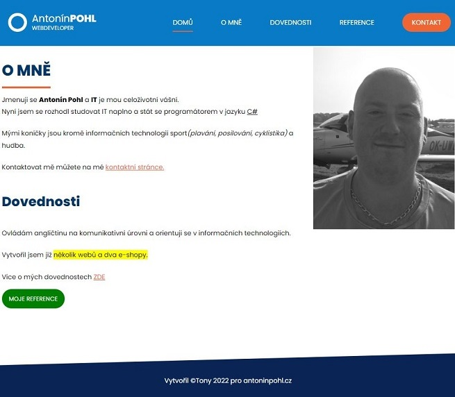
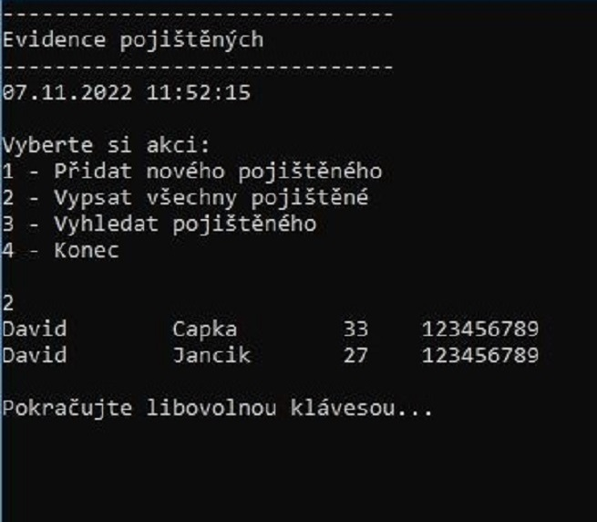
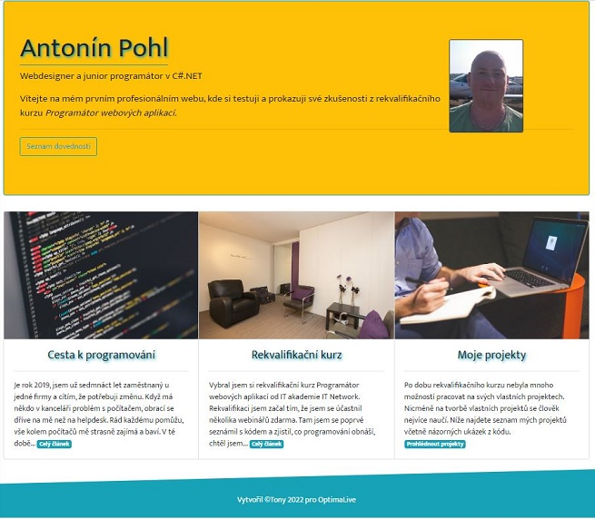

Moje projekty
- Statický web
- Evidence pojištění v C#
- Kalkulačka v ASP.NET
- Responzivní webové stránky
Seznam vlastních projektů
Statický web v HTML a CSS
Osobní webové portfolio v HTML a CSS, tvořené přesně podle návodů u IT Network.Můj první projekt.
Evidence pojištění v C#
Konzolová aplikace k závěrečným zkouškám - evidence pojištění s vyhledáváním, přidáváním a vypsáním pojištěného.
Kalkulačka v ASP.NET Core MVC
Webová aplikace v ASP.NET Core MVC - Webová kalkulačka se základními operátory. Moje první webová aplikace.

Responzivní webové stránky
Osobní webové portfolio v HTML, CSS a Bootstrapu. Plně responzivní osobní webové stránky.
